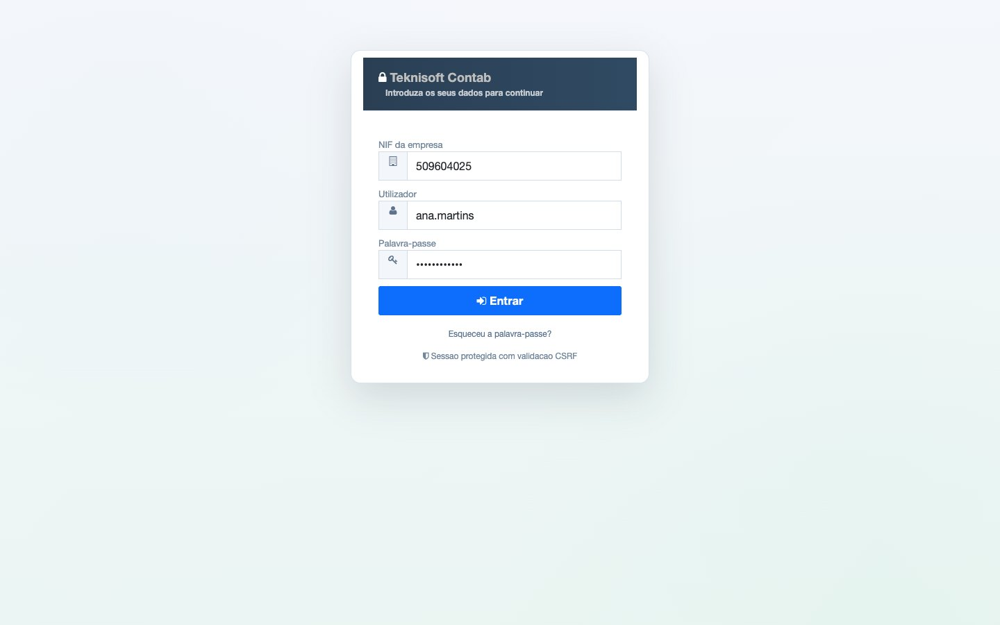
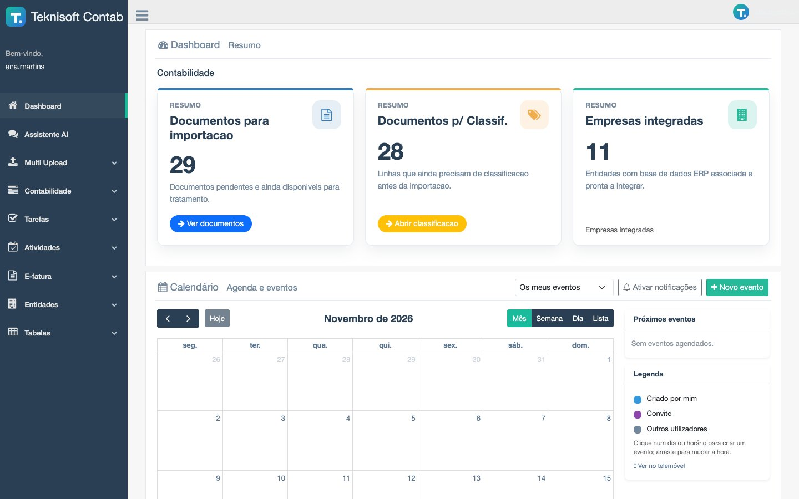
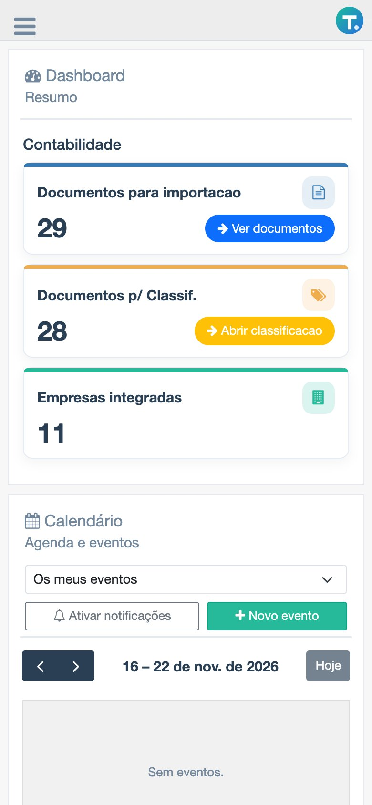

Primeiros passos
Como entrar na aplicação, orientar-se no painel e no menu, e usá-la também no telemóvel.
Entrar na aplicação
O Teknisoft Contab é multi-empresa: a mesma instalação serve várias empresas (tenants), cada uma com os seus dados isolados. Por isso, o ecrã de entrada pede três dados:

- NIF da empresa: identifica o tenant (o gabinete) e, com ele, a base de dados a usar.
- Utilizador e palavra-passe: as credenciais pessoais dentro dessa empresa.
- Clique em Entrar. Se tinha tentado abrir uma página antes de entrar, a aplicação leva-o diretamente para lá.
Use Recuperar palavra-passe no ecrã de entrada. Recebe por e-mail uma ligação temporária para definir uma nova (exige o SMTP configurado em Definições > Serviços).
Todos os formulários estão protegidos contra pedidos forjados (CSRF) e as sessões terminam em Terminar sessão. Num computador partilhado, termine sempre a sessão.
O Dashboard
Depois de entrar, abre o Dashboard. No topo estão os indicadores do módulo de Contabilidade; por baixo, o calendário partilhado do gabinete.

| Cartão | O que mostra | Atalho |
|---|---|---|
| Documentos para importação | Documentos carregados e ainda por tratar. | Ver documentos |
| Documentos p/ Classif. | Linhas a que ainda faltam contas antes de poderem ser importadas. | Abrir classificação |
| Empresas integradas | Clientes com base de dados ERP associada, prontos a receber lançamentos. | Lista de empresas |
O calendário (vistas Mês, Semana, Dia e Lista) mostra os eventos criados por si, os convites recebidos e, para administradores, os eventos de toda a equipa. Ver Agenda.
Navegação
O menu lateral agrupa as áreas da aplicação. Só aparecem os itens a que o seu perfil tem acesso e os módulos ativos.
| Menu | Para quê |
|---|---|
| Dashboard | Indicadores e calendário. |
| Assistente AI | Chat com o assistente de IA da empresa. |
| Multi Upload > Compras | Carregar faturas em lote (PDF). |
| Contabilidade | Classificação, Importação e Lançamentos ERP. |
| Tarefas | Confirmação de Pasta, Apuramento de IVA, Envio de SAF-T, Envio DP IVA. |
| Atividades | Registo de trabalho por cliente (tempo, categoria, descrição). |
| Assiduidade | Registo de ponto, ausências e férias (quando o módulo está ativo). |
| E-fatura | Credenciais por empresa, documentos sincronizados e histórico de sincronizações. |
| Entidades > Empresas | Fichas dos clientes do gabinete. |
| Tabelas | Departamentos, campos adicionais, tarefas AI e categorias de atividade (administradores). |
O botão ☰ no topo recolhe o menu para ganhar espaço; a escolha fica memorizada. O menu da área em que está mantém-se aberto e assinalado.
No canto superior direito ficam o seu perfil (foto, dados pessoais, palavra-passe), o seletor de empresa do E-fatura quando aplicável, e o relógio de ponto quando a Assiduidade está ativa.
No telemóvel
Toda a aplicação se adapta ao ecrã do telemóvel: tabelas com deslocamento horizontal, menu deslizante e calendário em formato lista.

Pode também instalar a aplicação no ecrã principal (PWA): no Safari use Partilhar > Adicionar ao ecrã principal; no Chrome use Instalar aplicação. A app instalada usa o nome e o ícone definidos em Definições > Geral e pode receber notificações push (lembretes de eventos, convites) mesmo fechada.